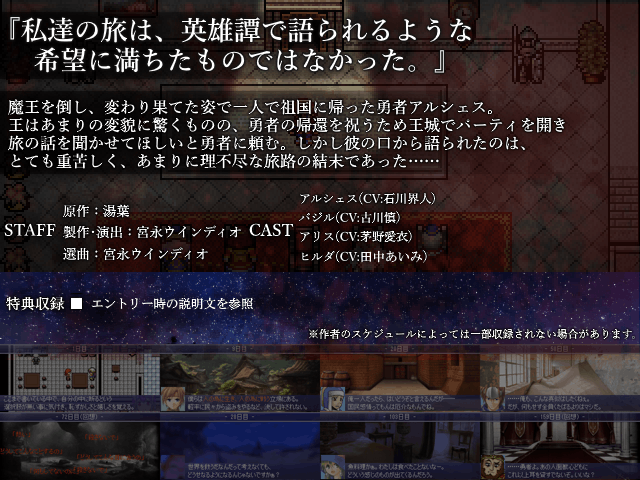

| No.28 薄汚れた勇者と僧侶の手記：Director's Cut | |
|
 | |
| 作成ツクール：2003s | |
| ジャンル：読むゲ | |
| 作者名：ミヤナガティウス | |
| ＜配信/動画投稿/翻訳＞可/可/大歓迎 | |
|
＜作者のコメント＞ 2011年に旧2chにて投稿されたウェブ小説「勇者「魔王倒したし帰るか」」を今更勝手に読むゲナイズ…… したものを2年越しで誤字や描写を見直し、製作室、音楽室、外伝などを追加した、Director's Cutという名のアップデート版です。 本来はもっと別のやつでエントリーする予定でしたが、そっちが間に合わなくなっちゃったのでこれを持ってきました。 前編と後編に分かれてますが、前編がプロローグで後編が本編みたいな構成になってます。 原作小説とはかなり違う台詞回しと結末になっているので、元ネタ知ってても知らなくても大丈夫です。 世界観もかなり独自解釈で掘り下げられてますし、主人公達の性格もまあまあ違います。 ◆原作者許可済み ◆本verではEasyRPGでの起動対応 ◆製作室内で何個か短編も収録したり、余裕があれば世界観を補間する外伝も収録する予定。 ◆本作にはCERO D相当の過激な暴力、鬱展開、残酷描写、ジャンプスケア等が含まれます。 ◆例によってXP以降のRTP勢の出番多めです。ちゃんと描写に合う理由があっての配役なので悪しからず。 ◆Shiftキー押しっぱで文章スキップ、数字キーの[2]で等倍、[3]で2倍、[4]で4倍、[5]で10倍速に変更可 | |
管理人から こちらは作者さんの自信作のリマスターのようでこれを機に読んでみるのもいいと思います！10倍速で本を読める方にも対応されていてすごいです こちらは作者さんの自信作のリマスターのようでこれを機に読んでみるのもいいと思います！10倍速で本を読める方にも対応されていてすごいです |
|
| ダウンロード(41.1mb) 感想掲示板 | |
| 前の作品 次の作品 / TOPへ戻る | |